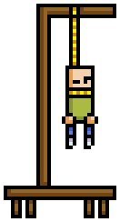
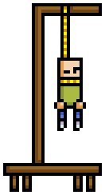

Il gioco dell'impiccato ci insegna, fin da piccoli, che dicendo le parole sbagliate,
si può uccidere qualcuno!
Come vuoi giocare?
MADE WITH ❤ IN ITC BONELLI
CLASSE 4A SIA | A.S. 2018-2019

Il gioco dell'impiccato ci insegna, fin da piccoli, che dicendo le parole sbagliate,
si può uccidere qualcuno!
MADE WITH ❤ IN ITC BONELLI
CLASSE 4A SIA | A.S. 2018-2019